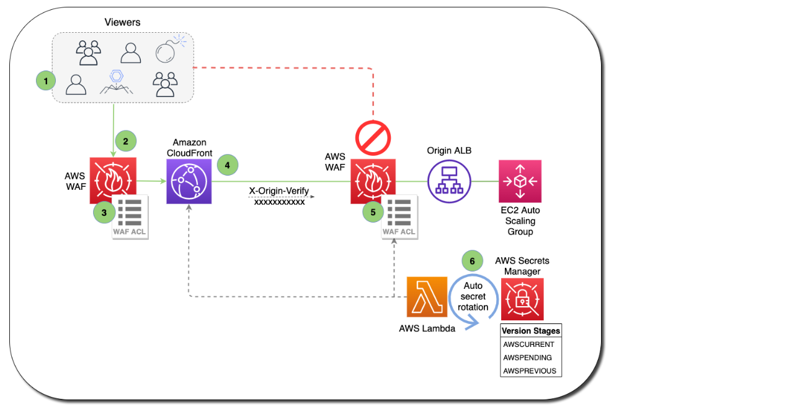
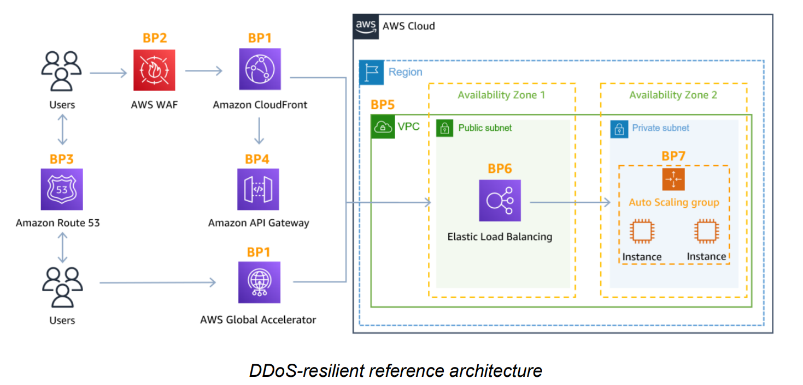

DDoS Attacks Mitigation
Key services
- AWS Shield Standard: protects against DDoS attack for your website and applications, for all customers at no additional costs
- AWS Shield Advanced: 24/7 premium DDoS protection
- AWS WAF: Filter specific requests based on rules
- CloudFront and Route 53:
- Availability protection using global edge network
- Combined with AWS Shield, provides DDoS attack mitigation at the edge
- Be ready to scale – leverage AWS Auto Scaling
- Separate static resources (S3 / CloudFront) from dynamic ones (EC2 / ALB)
Route 53 may prevent disruption, but does not stop DDoS attacks.
Application Layer Defence
- Leverage both CloudFront and AWS WAF to help defend against application layer DDoS attacks
- CloudFront - cache static content, prevent non-web traffic from reaching your origin, automatically close connections from slow-reading/slow-writing attackers
- AWS WAF - Filter and block requests using web access control lists (ACLs).
- WAF is NOT for DDoS protection. But can be used in conjunction with ALB, API Gateway (Regional or Edge) and CloudFront (Edge)
- Allow or block based on URI, query string, HTTP method or Headers
- To block attacks based on IP address reputation, you can create rules using IP match conditions or use Managed Rules for AWS WAF offered by sellers in the AWS Marketplace
- Use AWS Firewall Manager to centrally configure and manage security rules, such as AWS Shield Advanced protections and AWS WAF rules, across your organization.
- By configuring your origin to respond to requests only when they include a custom header that was added by CloudFront, you prevent users from bypassing CloudFront and accessing your origin content directly.
Both WAF and CloudFront enable you to set Geo-restrictions to block or allow requests from selected countries.

Infrastructure Layer Defence
- To handle additional volume, use Dedicated EC2 instances, EC2 instances with N suffix, and support for enhanced networking with upto 100 Gbps of network bandwidth.
- EC2 auto-scaling to handle burst of traffic
- Elastic Load Balancing to route requests across multiple instances
- Application Load Balancer blocks many common DDoS attacks, such as SYN floods or UDP reflection attacks, protecting your application from the attack
- You can use AWS Shield Advanced to configure DDoS protection for Elastic IP addresses, when NLB is used - since NLB will not absorb attacks.
- AWS edge locations provide additional layer of security (CloudFront, Global Accelerator, and Amazon Route 53)
WAF vs. NACL (or) Security Groups: WAF is an excellent choice for filtering out malicious requests, but takes time. NACL is quick and easy and can implement DENY. Security Groups implements ONLY ALLOW.
For blocking a known set of malicious IPs, NACL is the easiest and quickest option.
Protection across multiple accounts
- When managing AWS Shield Advanced protected resources in multiple accounts, you can set up centralized monitoring by using AWS Firewall Manager and AWS Security Hub.
- With Firewall Manager, you can create a security policy that enforces DDoS protection compliance across all your accounts.
DDOS Resilient Reference Architecture

Attack Surface Reduction
- Expose resources within private subnet, reducing attack surface.
- Use API Gateway Region endpoint option, since it allows you to setup your own CloudFront Distribution.
Best Practices
- Use Globally Distributed services like Amazon CloudFront and Amazon Route 53
- Handle fluctuations in demand with Elastic Load Balancer
- Prepare to scale compute to maintain availability (auto-scaling)
- Use Security Groups and Network ACLs with a Virtual Private Cloud (VPC)
- Enable CloudWatch for metrics that matter to you
- Enable Service Logs for Deeper Analysis
- Enable AWS WAF for baselining layer 7 traffic
- Enable Shield Advanced for advanced anomaly detection
- Use AWS WAF to quickly block Layer 7 attacks
- Use AWS Shield Advanced for effective incident response
If you’re using Amazon S3 to serve static content on the internet, AWS recommends you use CloudFront to protect your bucket.
Although AWS Shield Standard can mitigate Layer 3 or Layer 4 attacks, it does not include a detailed notification of the recent layer attacks to your AWS resources such as SYN floods and UDP reflection attacks.
- Protect a web application and RESTful APIs against a DDoS attack:
- Shield Advanced protecting an Amazon CloudFront distribution and an Application Load Balancer.
- Protect a TCP-based application against a DDoS attack:
- Shield Advanced protecting an AWS Global Accelerator standard accelerator; attached to an Elastic IP address
- Protect a UDP-based game server against a DDoS attack:
- Shield Advanced protecting an Amazon EC2 instance attached to an Elastic IP address
Cloudfront for DDoS
- Persistent TCP connections and variable time-to-live (TTL) can be used to accelerate delivery of content, even if it cannot be cached at an edge location.
- This allows you to use Amazon CloudFront to protect your web application, even if you are not serving static content.
- Amazon CloudFront only accepts well-formed connections to prevent many common DDoS attacks like SYN floods and UDP reflection attacks from reaching your origin.
Persistent connections and variable time-to-live (TTL) settings can be used to offload traffic from your origin, even if you are not serving cacheable content. Use of these CloudFront features reduces the number of requests and TCP connections back to your origin, helping protect your web application from HTTP floods.
Global accelerator
- Global Accelerator is a networking service that improves availability and performance of users’ traffic by up to 60%.
- This is accomplished by ingressing traffic at the edge location closest to your users and routing it over the AWS global network infrastructure to your application, whether it runs in a single or multiple AWS Regions.
You may require IP addresses that your end users can add to the allow list in their firewalls and are not used by any other AWS customers. In these scenarios you can use Global Accelerator to protect web applications running on Application Load Balancer and in conjunction with AWS WAF to also detect and mitigate web application layer request floods.
Route 53
- Amazon Route 53 uses techniques such as shuffle sharding and anycast striping, that can help users access your application even if the DNS service is targeted by a DDoS attack.
Shuffle Sharding
With shuffle sharding, each name server in your delegation set corresponds to a unique set of edge locations and internet paths. This provides greater fault tolerance and minimizes overlap between customers. If one name server in the delegation set is unavailable, users can retry and receive a response from another name server at a different edge location.
Anycast Striping
Anycast striping allows each DNS request to be served by the most optimal location, dispersing the network load and reducing DNS latency. This provides a faster response for users. Additionally, Amazon Route 53 can detect anomalies in the source and volume of DNS queries, and prioritize requests from users that are known to be reliable.